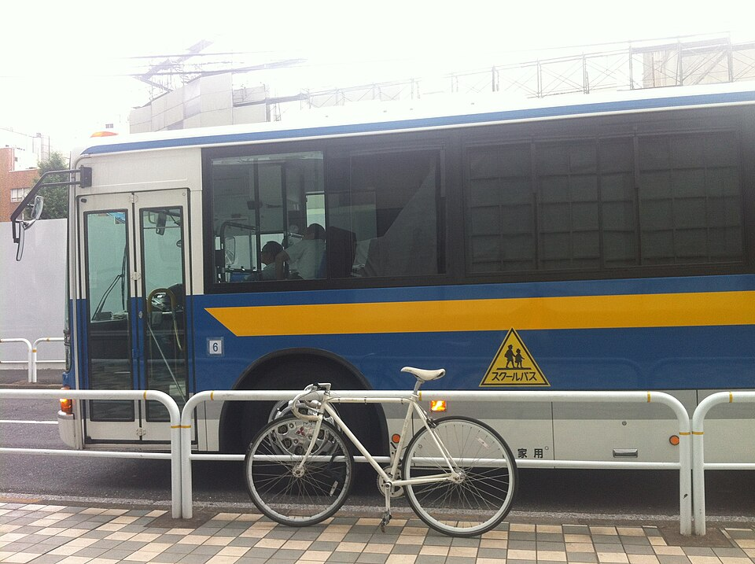

스쿨버스 (이미지) · 사진: nesnad / Wikimedia Commons, CC BY 3.0
국제학교 통학·스쿨버스 — 집을 어디에 구하느냐가 아이의 하루를 정합니다
1. 한국의 등하교와 무엇이 다른가
한국에서는 집 근처 학교에 배정되거나, 멀어도 대중교통으로 어떻게든 다닙니다. 국제학교는 전제가 다릅니다. 학생들이 도시 전역에 흩어져 살기 때문에 학교가 버스를 직접 운영하고, 그 버스가 갈 수 있는 범위가 정해져 있습니다.
| 항목 | 한국 학교 | 국제학교(일반적인 경우) |
|---|---|---|
| 학교와 집의 관계 | 집 근처 학교로 배정 | 학교를 먼저 정하고 집을 맞춤 |
| 버스 운영 | 대부분 없음(대중교통·도보) | 학교가 지정 노선으로 운영(업체 위탁이 많음) |
| 탈 수 있는 조건 | 해당 없음 | 집이 노선·정차 지점 범위 안에 있어야 함 |
| 비용 | 해당 없음 | 학비와 별도로 청구되는 경우가 일반적 |
| 신청 시기 | 해당 없음 | 정원이 있어 마감이 있음 — 늦으면 대기 |
| 방과후 활동 | 알아서 귀가 | 늦은 버스가 없으면 활동이 불가능해지기도 |
표의 세 번째 줄이 핵심입니다. 거리가 가깝다고 버스를 탈 수 있는 것이 아닙니다. 학교에서 5km 떨어진 집은 노선 위에 있으면 타고, 2km 떨어진 집은 노선 밖이면 못 탑니다. 그래서 "학교에서 얼마나 가까운가"가 아니라 "노선 위에 있는가"를 물어야 합니다.
2. 집을 계약하기 전에 학교에 물어볼 다섯 가지
부동산 중개인은 학교 버스 사정을 모릅니다. 아래 다섯 가지는 반드시 학교(입학처 또는 운영 담당)에 직접 물어보셔야 합니다.
· ① "이 주소로 버스가 옵니까?" — 동네 이름이 아니라 정확한 주소나 단지 이름으로 물으세요. 같은 동네여도 단지에 따라 정차 여부가 갈립니다.
· ② "편도 소요 시간이 몇 분입니까?" — 거리로 묻지 말고 분으로 물으세요. 출근 시간대 정체가 반영된 숫자여야 합니다.
· ③ "몇 시에 타고 몇 시에 내립니까?" — 노선 앞쪽에 서는 집은 아침에 아주 일찍 탑니다. 저학년이면 이게 1년 내내 부담이 됩니다.
· ④ "방과후 활동용 늦은 버스가 있습니까? 같은 노선입니까?" — 있다고 해도 노선이 줄어드는 경우가 많습니다.
· ⑤ "신청 마감과 정원이 어떻게 됩니까?" — 버스는 자리가 찹니다. 입학 허가와 버스 자리는 별개입니다.
📌 회사가 사택을 정해 주는 경우에도 할 수 있는 일이 있습니다. 계약 전에 후보 주소를 학교에 보내 "버스가 오는지"만 확인해 달라고 요청하시면 됩니다. 몇 분이면 끝나는 확인인데, 이걸 안 해서 2~3년을 고생하는 가정이 많습니다.
3. 자주 하는 오해 다섯 가지
· ① "작년 노선표를 봤으니 됐다." → 노선과 정차 지점은 그해 신청 가구 분포에 따라 바뀝니다. 작년에 서던 곳이 올해는 안 설 수 있습니다. 반드시 올해 안내를 받으세요.
· ② "입학 허가를 받았으니 버스도 당연히 된다." → 다릅니다. 버스는 별도 신청·별도 비용·정원입니다.
· ③ "가까우니까 걸어 다니면 된다." → 도시에 따라 인도·횡단보도 사정이 한국과 많이 다릅니다. 학교가 저학년 도보 통학을 제한하는 경우도 있습니다.
· ④ "차로 데려다주면 되지." → 가능하지만, 등하교 시간대 차량 진입과 주차를 학교가 통제하는 경우가 흔합니다. 매일 반복되면 부모 한 사람의 하루가 묶입니다.
· ⑤ "형제는 같은 버스를 타겠지." → 캠퍼스가 나뉘어 있는 학교라면 형과 동생이 다른 버스를 탑니다. 하교 시간도 다를 수 있습니다. → 캠퍼스가 나뉜 학교의 예
4. 통학 시간이 공부에 미치는 영향 — 성적이 아니라 저녁 시간입니다
통학이 길면 성적이 바로 떨어지지는 않습니다. 대신 저녁 시간이 짧아집니다. 편도 한 시간이면 하루 두 시간이 사라지고, 그 두 시간은 보통 숙제와 수면에서 빠집니다.
문제는 국제학교 과제의 구조입니다. 기한이 1~4주인 과제가 많아 매일 조금씩 밀어 두는 방식이라야 버티는데, 저녁이 짧아지면 그 "조금씩"이 쌓이지 못하고 마감 전날로 몰립니다. 성적표에 나타나기까지 한두 달이 걸리고, 그때는 이미 습관이 굳어 있습니다. → 숙제·과제 관리
그래서 집을 고를 때 편도 소요 시간을 분 단위로 적어 보시기를 권합니다. 거리로 적으면 체감이 안 됩니다. "20분"과 "55분"은 1년이면 150시간 넘게 차이가 납니다.
5. 방과후 활동과 버스가 부딪히는 지점
상담에서 가장 자주 듣는 후회가 이것입니다. "클럽에 넣었는데 버스가 없어서 결국 그만뒀어요."
국제학교에서 방과후 활동은 단순한 취미가 아닙니다. 아이가 친구를 만들고 학교에 적응하는 통로이고, 고학년에서는 지원 서류에도 쓰이는 영역입니다. 그런데 늦은 버스가 없으면 활동 자체가 불가능해집니다. 그래서 활동을 신청하기 전에 귀가 방법부터 정해 두셔야 합니다. → 방과후·클럽(ECA/CCA)
확인할 것은 세 가지입니다. ① 늦은 버스가 있는가 ② 우리 집 쪽으로 오는가 ③ 몇 시에 출발하는가. 셋 중 하나라도 "아니오"면, 그 활동은 부모가 데리러 가야 하는 활동입니다. 그 전제로 신청하셔야 중간에 그만두지 않습니다.
6. 학기 중에 챙길 것 — 결석·지각·하차 지점 변경
버스는 등록해 놓고 끝이 아닙니다. 학기 중에 생기는 일이 있습니다.
· 아이가 버스를 안 타는 날은 학교와 버스 양쪽에 알려야 하는 경우가 많습니다. 담임에게만 말하면 버스가 기다리다 출발이 늦어집니다. 결석 통보 절차는 학교마다 다릅니다. → 출결(Attendance) 규정
· 하차 지점을 바꾸려면(친구 집·학원 등) 보통 서면 요청이 필요합니다. 당일 전화로는 안 되는 학교가 많습니다.
· 이사를 하면 노선 재배정이 필요하고, 새 주소가 노선 밖이면 버스를 못 타게 될 수도 있습니다. 이사 전에 반드시 확인하세요.
· 버스 안에서의 행동도 학교 생활 규정에 포함되는 경우가 있습니다. 아이에게 미리 알려 주시는 편이 좋습니다.
7. 가정에서 할 네 단계
· 1단계 — 학교를 두세 곳으로 좁힙니다. 그다음에 집을 봅니다. 순서를 바꾸지 마세요.
· 2단계 — 각 학교의 올해 노선·정차 지점·비용·마감을 받습니다. 이메일로 받아 두시면 나중에 근거가 됩니다.
· 3단계 — 집 후보 주소를 학교에 보내 확인받습니다. 계약 전입니다.
· 4단계 — 편도 시간을 분으로 적고, 저녁 일과를 역산합니다. 하교 시간 + 통학 시간 = 집 도착 시간. 거기서 저녁·숙제·수면을 배치해 보면 그 집이 가능한지 바로 보입니다.
📌 과외를 붙이실 계획이라면 4단계에서 같이 계산하세요. 통학이 긴 아이는 매일 조금씩이 어렵습니다. 그런 경우에는 주 1~2회를 그 과목 수업 전날 저녁에 배치해 밀도를 올리는 편이 낫습니다. 화상 수업은 이동 시간이 0이라, 통학이 긴 가정일수록 효과가 큽니다.
정리
국제학교에서 버스 노선표는 교통 정보가 아니라 집을 구할 수 있는 범위입니다. 그래서 순서는 학교 → 노선 확인 → 집입니다. 계약 전에 다섯 가지(주소에 오는가·몇 분인가·몇 시인가·늦은 버스가 있는가·마감과 정원)를 학교에 직접 물어보시고, 편도 시간을 분 단위로 적어 저녁 일과를 역산해 보세요. 통학은 편의의 문제가 아니라 아이의 저녁 시간을 얼마나 남겨 주느냐의 문제입니다. 통학이 길어 공부 시간이 빠듯한 아이라면 30분 무료 수업으로 지금 상태를 먼저 점검해 보시기 바랍니다. (노선·비용·운영 방식은 학교마다 다르고 해마다 바뀌니 반드시 학교 안내를 직접 확인하세요.)